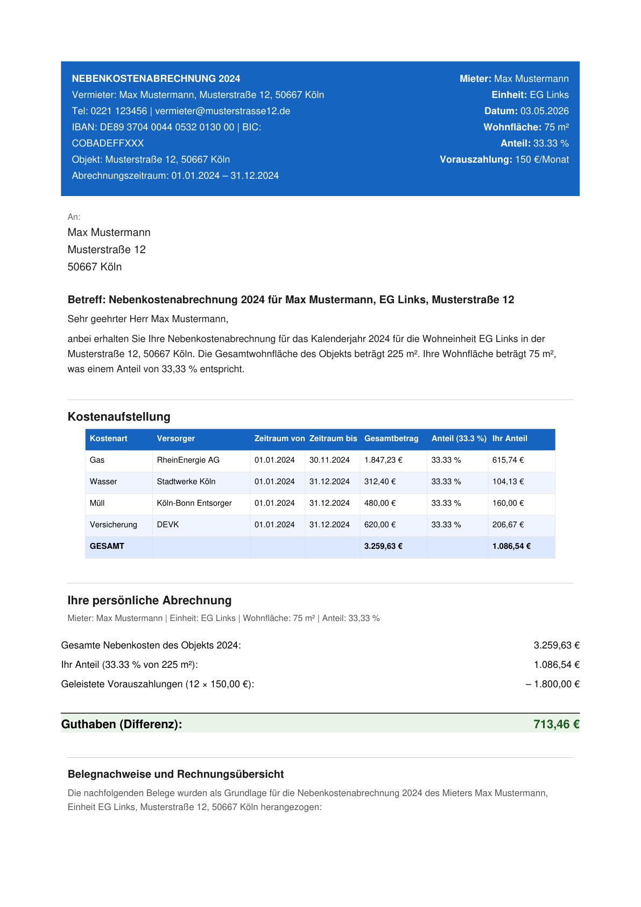
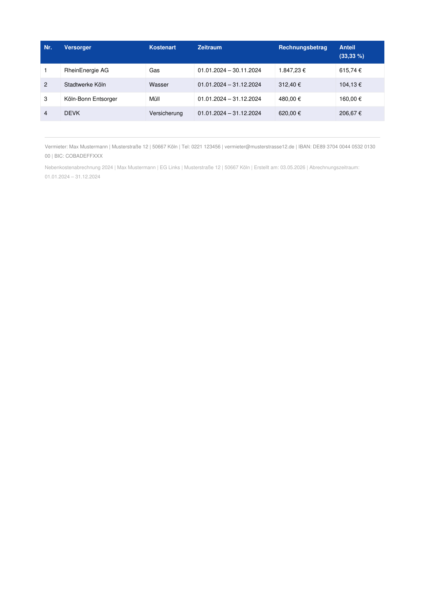

Einmaliges Setup: Google Drive als Datenquelle verbinden
Der erste Schritt ist Claude Schreibzugriff auf Google Drive zu erteilen. In claude.ai unter Konnektoren Google Drive verbinden und Schreibrechte autorisieren. Ab diesem Moment kann Claude selbstständig Dateien lesen, verarbeiten und neue Dateien erstellen.
Die Ordnerstruktur ist bewusst einfach gehalten. Drei Ordner, drei Funktionen: Eingabe der Stammdaten, Eingabe der Versorgerrechnungen, Ausgabe der fertigen Abrechnungen. Claude navigiert diese Struktur selbstständig sobald ein Prompt abgesetzt wird.
Mieterdaten sind personenbezogene Daten gemäß DSGVO. Bevor echte Mieter-, Verbrauchs- oder Zahlungsdaten in einen KI-Dienst eingegeben werden, sollte die Datenschutzkonformität des jeweiligen Anbieters geprüft und gegebenenfalls rechtlicher Rat eingeholt werden.
Von der Versorgerrechnung zum fertigen PDF
PDFs der Jahresrechnungen aller Versorger in den Ordner „Abrechnungen Versorger" hochladen. Keine spezielle Formatierung nötig. Claude liest das Rohdokument.
Der Workflow startet mit einem Kontext-Prompt: Stammdaten, Objekt, Abrechnungszeitraum. Danach folgen Kostenpositionen und pro Mieter ein PDF-Auftrag. Die genauen Prompts sind in Block 03 dokumentiert.
Claude öffnet alle Versorger-PDFs, extrahiert Beträge, Zeiträume und Kostenpositionen. Parallel werden Stammdaten und Mieterflächen aus der CSV geladen.
Kostenanteil nach Wohnfläche und Verbrauch berechnet. Vorauszahlungen gegengerechnet. Nachzahlung oder Guthaben ermittelt. Alle Pflichtangaben nach § 556 BGB eingebaut.
Fertige Abrechnungen landen automatisch im Ordner „Erstellte Nebenkostenabrechnungen". Benannt nach Schema: NK_2024_[Nachname].pdf.
Input: Versorgerrechnungen (Mockdaten)
Diese vier Beispieldokumente wurden für den Workflow-Test generiert. Alle Firmennamen, Beträge und Bankdaten sind fiktiv.
Die Prompts die den Workflow steuern
Der gesamte Workflow wird über fünf wiederverwendbare Prompts gesteuert. Einmal eingerichtet, kann er jedes Jahr mit denselben Prompts wiederholt werden.
Ich möchte Nebenkostenabrechnungen erstellen.
Erstelle für jeden Mieter eine rechtssichere PDF-Abrechnung
gemäß § 556 BGB mit vollständiger Kostenaufstellung,
Verbrauchsnachweis und Abschlussrechnung.
Stammdaten Vermieter:
- Name: [Name]
- Adresse: [Straße, PLZ Ort]
- IBAN: [IBAN]
Objekt:
- Adresse: [Straße, PLZ Ort]
- Gesamtwohnfläche: [xxx] m²
- Abrechnungszeitraum: 01.01.2025-31.12.2025
Hier sind die Gesamtkosten für das Objekt 2025:
- Energieversorger Gas: 2.847,32 € / Verbrauch
- Wasserwerk: 1.091,12 € / Verbrauch
- Abfallentsorgung: 659,52 € / Wohnfläche
- Gebäudeversicherung: 1.535,17 € / Wohnfläche
Erstelle die Nebenkostenabrechnung als PDF für:
- Name: Max Mustermann
- Wohnfläche: 75 m²
- Personen: 3
- Vorauszahlung: 150 € / Monat
- Wärme: 11.200 kWh
- Wasser: 84 m³
Iteration gehört zum Prozess
Das erste PDF ist schnell erstellt. Ob es aussieht, wie es aussehen soll, ist eine andere Frage.


Das ist keine Schwäche des Workflows, sondern der Realität geschuldet: KI generiert beim ersten Versuch ein funktionierendes Dokument, aber kein layouttreues. Redundante Angaben, inkonsistente Abstände, Felder die doppelt erscheinen oder Informationen die an der falschen Stelle landen: all das ist beim ersten Durchlauf normal.
In der Praxis bedeutet das: Nach dem ersten PDF-Output folgt ein Redigier-Schritt. Man schaut sich das Ergebnis an, identifiziert was nicht stimmt, und gibt Claude präzises Feedback per Prompt.
Das Layout hat folgende Probleme:
- Die Vermieteradresse erscheint doppelt
- Der Abrechnungszeitraum fehlt in der Kopfzeile
- Die Kostenaufstellung hat zu wenig Abstand
zur Zusammenfassung
- Die Nachzahlung soll optisch hervorgehoben
werden
Bitte das PDF mit diesen Korrekturen neu erstellen.
Je präziser das Feedback, desto schneller konvergiert das Layout. In diesem Projekt waren es mehrere solcher Iterationsschritte bis das PDF das Ergebnis hatte, das man einem Mieter tatsächlich zustellen würde. Das gehört zum Prozess dazu.
Ergebnis: Fertige Nebenkostenabrechnungen
Ohne Google Drive: Drag & Drop
Wer Google Drive nicht einrichten möchte, kann Versorgerrechnungen auch direkt per Drag & Drop in das Claude Chat-Fenster ziehen. Claude extrahiert dann selbstständig alle relevanten Daten aus dem Dokument und fährt mit dem Workflow fort.
Diese Methode eignet sich besonders wenn die Versorgerrechnungen als Foto oder Scan vorliegen oder wenn der Workflow einmalig und ohne Drive-Anbindung genutzt werden soll.
Ich habe dir diese Versorgerrechnung hochgeladen.
Extrahiere daraus alle relevanten Daten
für eine Nebenkostenabrechnung:
- Versorger und Abrechnungszeitraum
- Alle Kostenpositionen mit Beträgen
- Gesamtbetrag
- Empfohlener Umlageschlüssel
Danach weiter mit Prompt 1 aus Block 03: Stammdaten setzen und Abrechnung erstellen.
Was dieser Workflow zeigt und was er nicht ist
Das ist kein fertiges Produkt. Es ist ein funktionierender Proof of Concept der demonstriert, dass ein vollständiger Datenfluss von der Versorgerrechnung bis zum generierten PDF möglich ist. Das finale Layout erfordert zusätzliche Iterationsschritte, wie in Block 03c dokumentiert.
Alle in dieser Dokumentation verwendeten Daten sind Mockdaten. Vermieter, Mieter, Adressen, Beträge und Firmennamen sind vollständig fiktiv und dienen ausschließlich der Demonstration des Workflows.
In einem echten Einsatz würden echte Zählerstände, echte Mietverträge und eine rechtliche Prüfung hinzukommen.
Der fehlende automatische Trigger ist keine technische Lücke. Es ist eine bewusste Entscheidung: Ein Agent, der ohne Prüfschritt Nebenkostenabrechnungen generiert und versendet, nimmt dem Vermieter genau die Kontrolle weg, die ihm Vertrauen gibt. § 556 BGB kennt keine Fehlertoleranz. Das mentale Modell des Nutzers auch nicht. Automatisierung ist das richtige Werkzeug wenn Vertrauen bereits etabliert ist. Nicht um es herzustellen.